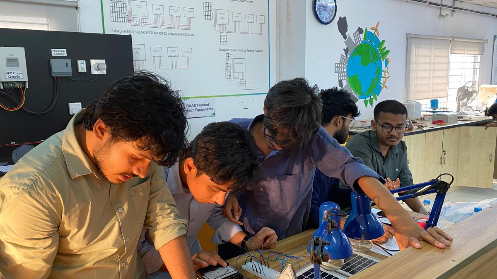

Solar System Planning, Design, Installation and Operation
Completed an intensive 32-hour practical professional training program hosted by the Department of Electrical & Electronic Engineering (EEE) at Daffodil International University (DIU), Savar, Dhaka. The curriculum integrated rigorous solar photovoltaics theory with extensive laboratory testing and hands-on commissioning across DIU's 24 kWp rooftop solar installation—covering solar radiation geometry, crystalline PV module testing, I-V curve tracing, on-grid and hybrid inverter topologies (Growatt, JFY, NEXT), tubular deep-cycle storage banks, and AC/DC protection switchgear.

Comprehensive hands-on training spanning theoretical design, equipment sizing, and field commissioning.
Analyzed DIU's 11 kWp on-grid, 5 kWp hybrid EV charging, and 8 kWp lab research solar arrays.
Direct field operation of portable I-V curve tracers, testing open-circuit voltage, short-circuit current, and fill factor.
Officially certified upon successfully completing all practical competencies, calculations, and safety assessments.
Practical Fieldwork & Training Chronicle
Comprehensive visual documentation captured during the training program—from rooftop string inspections and solar geometry demonstrations to inverter wiring, battery bank safety, and computer-aided system simulation.
Practical Training Methodology & Scope
The Solar System Planning, Design, Installation and Operation training program at Daffodil International University (DIU) was structured to bridge theoretical electrical engineering concepts with industry-standard installation and diagnostic practices. Held across the Renewable Energy Lab and the active 24 kWp Rooftop Solar Facility at Daffodil Smart City, the program offered direct physical access to working commercial-grade photovoltaic hardware, power electronics, and diagnostic instrumentation.
Throughout the 32 intensive training hours, participants transitioned systematically through the engineering lifecycle of solar PV projects: from astronomical sun-path calculations and shading analysis to DC string sizing, inverter topology selection, storage chemistry management, and statutory electrical safety compliance.
Technical Modules & Hands-On Engineering Insights
The practical curriculum focused on five primary engineering domains:
Examined solar declination, zenith angles, and azimuth orientation using physical models and digital pyranometers. Determined optimal fixed-tilt angle (23°–24° South for Bangladesh) and calculated inter-row pitch to prevent self-shading during critical winter solstice hours.
Hands-on comparative study of on-grid string inverters (JFY, Growatt) versus multi-mode hybrid power units (NEXT). Explored Maximum Power Point Tracking (MPPT) algorithms, DC input voltage operating windows, and grid-synchronization protection criteria.
Configured tubular deep-cycle lead-acid battery banks (Hamko, Hyper Energy). Analyzed Depth of Discharge (DoD), C-rate impacts, cycle-life degradation, equalize charging voltages, and high-current busbar interconnect safety.
Operated professional portable I-V Curve Tracers on active rooftop strings, extracting real-time open-circuit voltage (Voc), short-circuit current (Isc), maximum power (Pmax), and fill factor (FF) to detect module degradation and series resistance anomalies.
Electrical Protection Switchgear & Safety Standards
A key focus was standard-compliant electrical safety in distributed photovoltaic installations:
- DC Disconnects & Array Combiners: Rotary load-break DC disconnect switches and high-voltage DC fuses rated for continuous solar string operation.
- Surge Protection Devices (SPDs): Class II DC and AC surge arresters safeguarding inverter power electronics against induced atmospheric lightning transients.
- Earthing & Equipotential Bonding: Frame-to-frame equipment grounding loops and dedicated earthing pits maintaining low earth-fault loop impedance.
- AC Sub-Distribution: Bi-directional tariff metering interfaces, residual current circuit breakers (RCCBs), and anti-islanding trip relays preventing back-feeding during utility outages.
Certification & Energy Policy Literature
Upon successful completion of all laboratory experiments, field diagnostics, and design computations, Md. Ratul Hasan was awarded the official Certificate of Training (Credential ID: RE26320) by the Department of Electrical & Electronic Engineering (EEE), Daffodil International University.